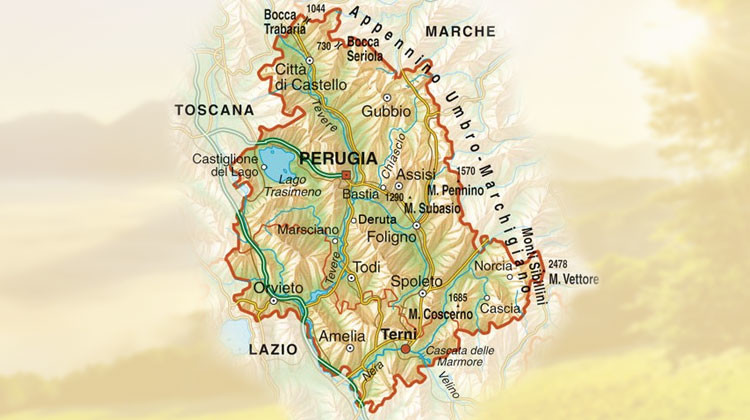
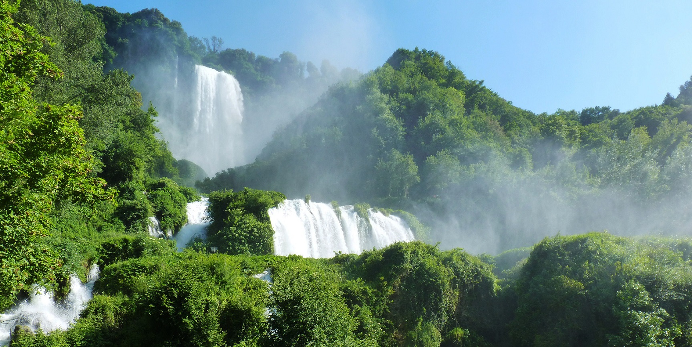

| Nome |
Umbria |
| Capoluogo |
Perugia (PG) |
| Data di Istituzione |
1948 |
| Altitudine media |
493 m.s.l.m |
| Superficie |
8.456 km^2 |
| Abitanti (agosto 2023) |
851.061 |
| Densità |
101 ab/km^2 |
| Comuni |
92 |
| Province |
Terni (TR) |
| Confini |
Lazio, Marche, Toscana |
| Patrono |
S.Francesco d'Assisi |
| PIL procapite (2017) |
24.500€ |
Posto da visitare assolutamente: Cascate delle Marmore - Provincia di Terni (TR)
Le Cascate delle Marmore sono una spettacolare cascata situata
nella regione dell'Umbria, in Italia.
Questa imponente cascata è nota per la sua bellezza scenica e
rappresenta uno dei luoghi naturali più visitati e apprezzati nella zona.
Ecco alcuni dettagli su queste affascinanti cascate:
Altezza e Struttura:
Le Cascate delle Marmore sono una cascata artificiale,
creata dai Romani nel 271 a.C. per deviare le acque del fiume
Velino e prevenire inondazioni nella piana sottostante.
La cascata ha un'altezza complessiva di circa 165 metri,
suddivisi in tre salti principali.
Il Percorso dell'Acqua:
L'acqua delle Cascate delle Marmore proviene dal fiume Velino e
viene deviata attraverso una serie di canali e condotte artificiali
costruite dagli antichi romani. La cascata è famosa per il suo
spettacolare flusso controllato, che può variare in base al
programma di apertura e chiusura delle dighe.
Orari di Apertura:
Le cascate sono generalmente aperte al pubblico in determinati orari,
ma l'apertura può variare a seconda delle condizioni
meteorologiche e delle esigenze idriche della zona circostante.
È possibile verificare gli orari di apertura presso il Centro
di Informazioni delle Cascate delle Marmore.
Spettacolo delle Cascate:
Durante l'apertura delle dighe, le Cascate delle Marmore offrono
uno spettacolo scenico incredibile. L'acqua scorre giù per i tre
salti principali, creando un'atmosfera spettacolare e un
fragore che si può udire anche da diverse centinaia di metri di distanza.
Sentieri e Passeggiate:
Intorno alle Cascate delle Marmore, ci sono vari sentieri e
percorsi che consentono ai visitatori di avvicinarsi
e godere di diverse prospettive delle cascate.
Uno dei punti panoramici più famosi è la "Balconata degli Innamorati."
Riserva Naturale:
La zona circostante le Cascate delle Marmore è parte della
Riserva Naturale delle Cascate delle Marmore,
una zona protetta che offre una ricca flora e fauna.
La riserva è ideale per escursioni a piedi e attività all'aria aperta.
Attività Ricreative:
Nella zona delle Cascate delle Marmore, è possibile praticare diverse
attività ricreative, tra cui escursioni, arrampicate, rafting e canyoning.
La presenza del fiume Velino offre opportunità per gli amanti degli
sport acquatici.
Storia e Mitologia:
Le Cascate delle Marmore sono legate anche a una leggenda mitologica.
Si dice che il poeta romano Virgilio le menzionò nell'Eneide,
e secondo la leggenda, le cascate furono create quando un innamorato
pastore morì di disperazione dopo che la sua amata ninfa, Nera, lo rifiutò.
Le Cascate delle Marmore sono dunque una meraviglia naturale
che combina storia, mitologia e bellezza paesaggistica.
La loro posizione nel cuore dell'Umbria le rende una destinazione
popolare per chi visita la regione.
